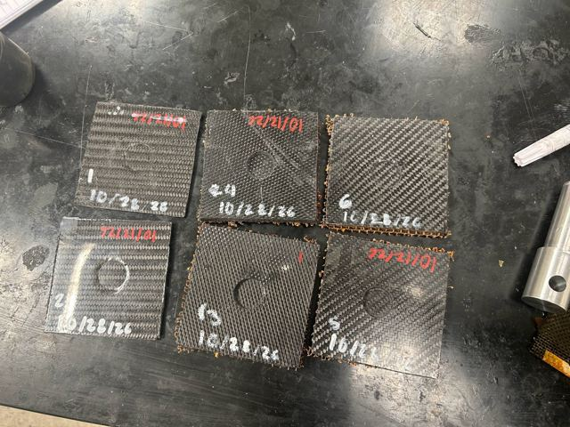

Composite anti-intrusion plate
UConn Formula SAE, 2025–2026 · on hold
0.6% largest gap between simulation and lab punch-shear results
A carbon fiber anti-intrusion plate designed to the FSAE composite rules. I modeled the geometry in SOLIDWORKS, built custom orthotropic materials in ANSYS ACP, and tuned ply orientations for strength at the lowest mass. Sandwich samples passed punch-shear testing on an Instron and matched the model. Simulating the 3-point bend test showed the design falls short, so the composite plate is on hold.
SOLIDWORKS, ANSYS ACP, ANSYS Mechanical